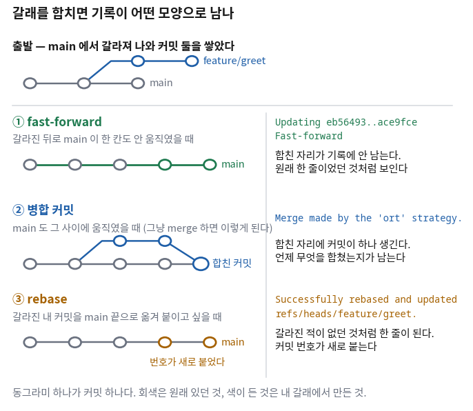
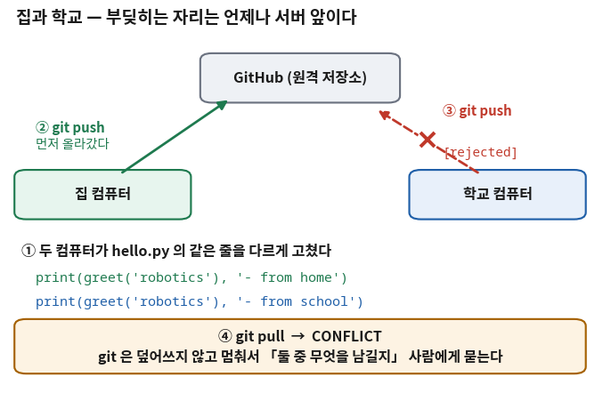

Git ② 여럿이 쓰는 git — 갈라지고, 부딪히고, 합쳐진다
- 커밋으로 충분한데 브랜치는 왜 따로 있나?
- 집에서 고치고 학교에서 또 고쳤다. 올리려는데 서버가 안 받아 준다. 무슨 일인가?
- 화면에
<<<<<<< HEAD라는 글자가 생겼다. 이건 무엇이고 어떻게 하나? - 합치는 방법이 여럿이라는데 언제 무엇을 쓰나?
- 혼자
merge하면 되는데 PR은 왜 만드나?
지난 시간에는 커밋이 한 줄로 쌓였다. 고치고, 담고, 굳히고, 올리고를 반복했다. 컴퓨터가 하나이고 사람이 하나이면 그걸로 끝난다.
오늘은 그 줄이 갈라진다. 이유는 둘 중 하나다 — 완성 안 된 것을 본줄기에 올리기 싫거나, 같은 저장소를 두 군데에서 고쳤거나. 앞의 것이 브랜치이고, 뒤의 것이 오늘 겪을 충돌이다.
git을 쓰면서 가장 무서운 자리가 오늘 나온다.
파일 한가운데에 <<<<<<< 같은 글자가 생기고
프로그램이 안 돌기 시작하는 자리다.
그런데 이 화면은 사고가 난 것이 아니라 사고를 막은 것이다.
오늘 자료의 절반이 그 한 문장을 설명하는 데 쓰인다.
아래 출력은 전부 실제로 실행해서 얻은 것이다. 돌린 곳: 컨테이너(우분투 24.04.4 LTS, git 2.43.0). 커밋 번호(해시)는 학생마다 다르게 나온다. 모양만 같으면 된다.
한 장 요약 — 명령은 다섯, 판단은 둘
무엇을 먼저 볼지: 맨 아래 두 줄이다. 나머지 다섯은 손에 붙으면 끝이지만 그 둘은 매번 새로 판단한다.
| 내가 하고 싶은 것 | 그때 이걸 친다 | 수준 |
|---|---|---|
| 지금 어느 갈래에 서 있나 / 갈래가 뭐가 있나 | git branch | [요구] |
| 새 갈래를 만들고 그리로 옮긴다 | git switch -c 이름 | [요구] |
| 있는 갈래로 옮긴다 | git switch 이름 | [요구] |
| 내 갈래를 서버에 처음 올린다 | git push -u origin 이름 | [알아보기] |
| 다른 갈래를 지금 갈래로 끌어와 합친다 | git merge 이름 | [판단] |
| 어떻게 합칠 것인가 🔴 | 사람이 정한다. ④절의 세 가지 | [판단] |
| 충돌했을 때 무엇을 남길 것인가 🔴 | 사람이 정한다. 코드를 읽어야 안다 | [판단] |
① 커밋이 있는데 갈래는 왜 또 있나 🔴 사람이 한다
지난 시간에 커밋을 배웠다. 커밋 하나가 한 덩어리의 변경이었다. 그러면 커밋을 계속 쌓으면 되지 갈래는 왜 필요한가.
이유는 「덜 된 상태」가 존재하기 때문이다. 함수 하나를 만드는 데 커밋이 셋 필요하다고 하자. 첫째와 둘째 커밋만 있는 상태는 프로그램이 안 도는 상태다. 그것을 본줄기에 그대로 쌓으면 그 사이에 저장소를 받아 간 사람은 안 도는 코드를 받는다.
| 크기 | 무엇을 담나 | 끝났다는 기준 | |
|---|---|---|---|
| 커밋 | 작다 (몇 줄 ~ 파일 몇 개) | 한 가지 변경 — 함수 하나, 오타 하나 | 「~하고」가 안 들어가는 메시지가 써지면 |
| 브랜치 (갈래) | 크다 (커밋 여러 개) | 한 가지 목적 — 기능 하나, 고장 하나 | 돌려 봤고 남에게 보여 줄 수 있으면 |
main)에는 돌아가는 것만 올라간다.

main이고, 위아래로 갈라진 곡선이 갈래다.
일이 세 갈래로 동시에 가는데도 main은 한 줄로 남는 것이 요점이다.
갈래 안에서 무엇을 하든 합치기 전까지 main은 안 건드려진다.이 강의에서 갈래를 쓰는 자리는 정해져 있다. 29~30회 프로젝트에서 팀으로 일할 때이고, 그때 PR 설명 다섯 줄이 평가 항목이 된다(⑦절). 오늘은 그것을 혼자 한 바퀴 돌아 본다.
② 갈래를 만들고 오간다 — git branch와 git switch 🔴 손에 익힌다
무엇이 궁금한가
무엇을 하기 전에 언제나 「지금 어디에 서 있나」부터 본다.
4회의 git status 첫 줄에 이미 나와 있었다 — On branch main.
갈래가 하나뿐일 때는 볼 일이 없었지만, 오늘부터는 잘못된 갈래에서 커밋하는 일이 생긴다.
그때 이걸 친다
4회에서 만든 sch-robotics 폴더에서 이어 간다.
$ cd ~/robotics/sch-robotics
$ git branch
* main
*가 붙은 줄이 지금 서 있는 갈래다. 아직 하나뿐이다.
이제 갈래를 하나 만들고 그리로 옮긴다.
$ git switch -c feature/greet
Switched to a new branch 'feature/greet'
$ git branch
* feature/greet
main🆕 이 출력에서 처음 나오는 것
git branch- 갈래 목록을 보여 준다. 만드는 명령이 아니라 보는 명령으로 쓰는 일이 훨씬 많다.
다 쓴 갈래를 지울 때는
git branch -d 이름이다. git switch -c 이름- 갈래를 만들고 그리로 옮긴다(switch: 바꾸다,
-c: create).-c를 빼면 이미 있는 갈래로 옮기기만 한다. feature/greet- 갈래 이름이다. 빗금은 폴더가 아니라 그냥 이름의 일부인데,
feature/·fix/처럼 앞에 종류를 붙이는 관례가 널리 쓰인다. 목록이 길어졌을 때 눈으로 묶어 읽기 좋다.
git checkout이 나온다 — 같은 일을 한다
git checkout -b 이름이 옛날부터 쓰이던 방식이고 지금도 된다.
그런데 checkout은 하는 일이 너무 많다 —
갈래를 옮기기도 하고, 파일 하나를 되돌리기도 한다.
그래서 2019년에 갈래 옮기는 일만 떼어 switch라는 이름을 새로 만들었다.
둘 중 하나만 쓰면 된다. 이 강의는 switch를 쓴다 —
이름이 하는 일을 말해 주기 때문이다.
남의 코드나 검색 결과에서 checkout -b를 보면 「갈래를 만들어 옮기는구나」로 읽으면 된다.
갈래 안에서 커밋을 쌓는다
인사말을 만드는 함수를 새 파일로 만들고, hello.py가 그것을 쓰게 고친다. 커밋 두 개다.
$ cat > greet.py
def greet(name):
return f"hello, {name}"
(Ctrl+D)
$ git add greet.py
$ git commit -m "인사말을 만드는 greet 함수 추가"
$ cat > hello.py
from greet import greet
print(greet('robotics'))
(Ctrl+D)
$ git add hello.py
$ git commit -m "hello.py 가 greet 를 쓰도록 바꿈"이 두 커밋이 어디에 쌓였는지를 눈으로 본다.
$ git log --oneline --graph --all
* ace9fce hello.py 가 greet 를 쓰도록 바꿈
* 7f352f1 인사말을 만드는 greet 함수 추가
* eb56493 첫 프로그램 hello.py 추가🆕 이 출력에서 처음 나오는 것
git log --oneline --graph --all- 4회의
--oneline에 두 개가 붙었다.--graph는 왼쪽에 갈래 모양을 그려 주고,--all은 지금 갈래만이 아니라 전부를 보여 준다. 오늘 가장 많이 치게 될 명령이다.
아직 왼쪽에 *만 세로로 있다. 갈라지지 않았다는 뜻이다 —
main이 그대로 있고 그 위에 두 개를 얹었을 뿐이다.
④절에서 이 모양이 왜 중요한지 나온다.
갈래를 옮기면 폴더 안의 파일이 바뀐다
이것을 한 번 눈으로 보는 것이 이 절의 목적이다.
main으로 돌아가서 폴더를 본다.
$ git switch main
$ ls
hello.py README.md
$ cat hello.py
print('hello robotics')greet.py가 사라졌고 hello.py가 옛날 내용으로 돌아왔다.
지운 것이 아니다. 갈래를 옮기면 git이 폴더 안의 파일을 그 갈래의 마지막 커밋 상태로 바꿔 놓는다.
git switch feature/greet로 돌아가면 파일도 같이 돌아온다.
고치던 것이 있는데 git switch를 치면 git이 거부하거나 그 변경을 끌고 따라간다.
갈래를 옮기기 전에는 git status로 working tree clean을 확인한다.
안 끝났으면 커밋부터 한다 — 갈래 안에서는 덜 된 커밋을 해도 괜찮다(①절).
③ 갈래를 서버에 올린다 — -u가 하는 일 🔴 손에 익힌다
무엇이 궁금한가
4회에서는 git push만 치면 올라갔다. 새로 만든 갈래에서 그냥 치면 안 된다.
한번 그대로 쳐 보고 git이 무엇을 알려 주는지 읽는다.
그때 이걸 친다
$ git switch feature/greet
$ git push
fatal: The current branch feature/greet has no upstream branch.
To push the current branch and set the remote as upstream, use
git push --set-upstream origin feature/greetgit status의 괄호 안내와 같은 것이다.
붉은 글자가 나오면 먼저 읽는다. 절반은 답이 그 안에 있다.
--set-upstream은 길어서 -u로 줄여 쓴다. 같은 것이다.
$ git push -u origin feature/greet
To https://github.com/내계정/sch-robotics.git
* [new branch] feature/greet -> feature/greet
branch 'feature/greet' set up to track 'origin/feature/greet'.
$ git push # 두 번째부터는 이것만
To https://github.com/내계정/sch-robotics.git
68b5534..7c71fc2 feature/greet -> feature/greet🆕 이 출력에서 처음 나오는 것
-u(--set-upstream)- 내 갈래를 서버의 같은 이름과 짝지어 둔다.
한 갈래에 한 번만 하면 되고, 그 뒤로는
git push·git pull만 쳐도 git이 어디로 보낼지 안다.clone으로 받아 온main은 이 짝이 처음부터 맺어져 있어서 4회에 이 오류를 안 만났다. [new branch]- 서버에 그 이름의 갈래가 새로 생겼다는 뜻이다. 이 줄이 나와야 GitHub 웹 화면에서 그 갈래가 보인다.
올라간 뒤에는 서버 쪽에 무엇이 있는지도 볼 수 있다.
$ git branch -a
* feature/greet
main
remotes/origin/feature/greet
remotes/origin/mainremotes/origin/…으로 시작하는 아래 두 줄이
4회에서 말한 「서버가 이랬다는 쪽지」다.
서버를 실시간으로 보고 있는 것이 아니라 마지막으로 통신했을 때의 사본이다.
이 쪽지가 낡았다는 것이 ⑤절의 사고 원인 전부다.
④ 합치는 방법 세 가지와, 언제 무엇을 쓰나 🔴 사람이 판단
갈래에서 일이 끝났으면 본줄기로 가져온다. 명령은 하나다 —
합칠 쪽으로 옮겨 가서 git merge 가져올갈래.
그런데 결과로 남는 기록의 모양이 세 가지다.

① fast-forward — 그냥 앞으로 감는다
갈라진 뒤로 main이 한 칸도 안 움직였을 때 일어난다.
지금이 정확히 그 상황이다 — ②절의 --graph에 갈래 표시가 없었던 것이 그 뜻이었다.
$ git switch main
$ git merge feature/greet
Updating eb56493..ace9fce
Fast-forward
greet.py | 2 ++
hello.py | 4 +++-
2 files changed, 5 insertions(+), 1 deletion(-)
create mode 100644 greet.py
$ git log --oneline --graph
* ace9fce hello.py 가 greet 를 쓰도록 바꿈
* 7f352f1 인사말을 만드는 greet 함수 추가
* eb56493 첫 프로그램 hello.py 추가Fast-forward라는 낱말 그대로다.
합칠 것이 없다 — main이라는 이름표를 내 갈래 끝으로 옮겨 놓기만 하면 된다.
그래서 새 커밋이 안 생긴다. 로그를 보면 갈래가 있었다는 흔적이 아예 없다.
② 병합 커밋 — 양쪽을 이어 붙이고 그 자리를 남긴다
내가 갈래에서 일하는 사이에 main도 움직였다면 이야기가 달라진다.
이름표만 옮길 수가 없다 — 양쪽에 서로 없는 커밋이 있기 때문이다.
이때 git은 커밋을 하나 새로 만들어 양쪽을 그 아래에 매단다.
$ git log --oneline --graph --all # 합치기 전
* 5ddaa8a hello.py 가 greet 를 쓰도록 바꿈
* 6e4e0eb 인사말을 만드는 greet 함수 추가
| * 1ad1a73 README 에 한 줄 설명 추가
|/
* c3735c1 첫 프로그램 hello.py 추가
$ git switch main
$ git merge feature/greet -m "greet 기능 병합"
Merge made by the 'ort' strategy.
greet.py | 2 ++
hello.py | 4 +++-
2 files changed, 5 insertions(+), 1 deletion(-)
$ git log --oneline --graph
* 816a75d greet 기능 병합
|\
| * 5ddaa8a hello.py 가 greet 를 쓰도록 바꿈
| * 6e4e0eb 인사말을 만드는 greet 함수 추가
* | 1ad1a73 README 에 한 줄 설명 추가
|/
* c3735c1 첫 프로그램 hello.py 추가🆕 이 출력에서 처음 나오는 것
- 왼쪽의
|\/표시 --graph가 그려 준 갈래 모양이다.|\은 여기서 둘로 갈라졌다,|/는 여기서 다시 하나가 됐다는 뜻이다. 맨 위 줄에*다음 칸이 비어 있으면 그 커밋이 병합 커밋이다.'ort' strategy- git이 두 쪽을 어떤 방식으로 맞춰 봤는지를 말하는 것이다. 이름은 알아 둘 필요 없다. 이 줄이 나왔다는 것이 「병합 커밋이 생겼다」는 표시다.
③ rebase — 갈래를 통째로 떼어 main 끝에 옮겨 붙인다
같은 상황에서 합치는 대신 옮겨 붙일 수도 있다.
「내 커밋들을 main의 최신 상태 위에서 다시 만든다」는 뜻이라 rebase(밑을 다시 잡다)다.
$ git switch feature/greet
$ git rebase main
Successfully rebased and updated refs/heads/feature/greet.
$ git log --oneline --graph --all
* bf59f3c hello.py 가 greet 를 쓰도록 바꿈
* a1f5600 인사말을 만드는 greet 함수 추가
* 1ad1a73 README 에 한 줄 설명 추가
* c3735c1 첫 프로그램 hello.py 추가
갈라진 모양이 사라졌다. 이제 main에서 합치면 ①의 fast-forward가 된다.
5ddaa8a가 bf59f3c가 됐다「옮겨 붙인다」는 것은 그 커밋을 다시 만든다는 뜻이다. 내용은 같지만 번호는 새로 붙는다.
그래서 이미 서버에 올린 갈래는 rebase 하지 않는다.
남이 받아 간 커밋의 번호가 바뀌면 그 사람 저장소와 내 저장소가 어긋난다.
돌려 놓으려면 git push --force가 필요해지고,
그건 2회에서 확인 후 실행으로 두라고 한 세 가지 중 하나다.
그래서 언제 무엇을 쓰나
무엇을 먼저 볼지: 맨 왼쪽 열이다. 상황이 정해지면 나머지는 따라온다.
| 이런 상황이면 | 이걸 쓴다 | 왜 |
|---|---|---|
main이 안 움직였다 |
그냥 merge (fast-forward가 된다) |
고를 것이 없다. 자동으로 그렇게 된다 |
기능 하나를 마쳐 main에 넣는다 |
merge (병합 커밋을 남긴다) |
언제 무엇을 합쳤는지가 기록에 남는다. 되돌릴 때 그 커밋 하나만 보면 된다 |
아직 안 올린 내 갈래를 최신 main 위로 옮긴다 |
rebase |
기록이 한 줄로 깔끔해진다. 아직 나만 갖고 있으니 번호가 바뀌어도 괜찮다 |
| 이미 서버에 올렸거나 남이 받아 갔다 | ⛔ rebase를 쓰지 않는다 |
번호가 바뀌면 남의 저장소와 어긋난다 |
merge만 써도 충분하다.
rebase는 이런 것이 있고 왜 조심하는지만 알아 두면 된다.
⑤ 집과 학교에서 같은 파일을 고쳤다 🔴 사람이 한다
여기부터가 오늘의 본론이다. 갈래를 안 나눠도 이 일은 일어난다. 저장소를 두 군데에 받아 두었으면 그것으로 충분하다.
「집」과 「학교」로 읽어도 되고 「나」와 「팀원」으로 읽어도 된다. 구조가 똑같다 — 같은 서버를 보는 저장소가 둘이다.

집에서 고쳐서 올린다
집 컴퓨터를 흉내 내려고 같은 저장소를 다른 이름으로 한 벌 더 받는다.
(실제로는 집 노트북에서 git clone을 한 번 하는 것이다.)
$ cd ~/robotics
$ git clone https://github.com/내계정/sch-robotics.git sch-robotics-home
Cloning into 'sch-robotics-home'...
done.
$ cd sch-robotics-homehello.py의 마지막 줄에 어디서 돌린 것인지를 붙이고 올린다.
$ cat > hello.py
def greet(name):
return f"hello, {name}"
print(greet('robotics'), '- from home')
(Ctrl+D)
$ git add hello.py
$ git commit -m "인사말 뒤에 어디서 돌린 것인지 붙임"
$ git push origin main학교에서는 그것을 모르고 같은 줄을 고친다
여기서 git pull을 안 한 것이 오늘의 사고 원인이다.
③절에서 본 대로, 학교 저장소의 origin/main은 낡은 쪽지다.
$ cd ~/robotics/sch-robotics
$ cat > hello.py
def greet(name):
return f"hello, {name}"
print(greet('robotics'), '- from school')
(Ctrl+D)
$ git add hello.py
$ git commit -m "인사말 뒤에 학교 표시를 붙임"
$ git push origin main
To https://github.com/내계정/sch-robotics.git
! [rejected] main -> main (fetch first)
error: failed to push some refs to 'https://github.com/내계정/sch-robotics.git'
hint: Updates were rejected because the remote contains work that you do not
hint: have locally. This is usually caused by another repository pushing to
hint: the same ref. If you want to integrate the remote changes, use
hint: 'git pull' before pushing again.hint:로 시작하는 네 줄을 읽는다.
"서버에 네가 갖고 있지 않은 작업이 있다"는 말이고,
마지막 줄에 무엇을 하라는지까지 적혀 있다 — git pull부터 하라고.
이 거절이 없었다면 집에서 한 커밋이 그대로 사라졌을 것이다.
받아 오려는데 git이 합치는 방식부터 정하라고 한다
시키는 대로 git pull을 치면 또 멈춘다. 이 화면도 처음에는 당황스럽다.
$ git pull origin main
hint: You have divergent branches and need to specify how to reconcile them.
hint: You can do so by running one of the following commands sometime before
hint: your next pull:
hint:
hint: git config pull.rebase false # merge
hint: git config pull.rebase true # rebase
hint: git config pull.ff only # fast-forward only
hint:
fatal: Need to specify how to reconcile divergent branches.git pull은 사실 「받아 오기 + 합치기」 두 개를 한 번에 하는 명령인데,
양쪽이 갈라졌으니 합치는 방식을 git이 마음대로 못 고르겠다는 것이다.
④절을 안 읽었으면 이 화면에서 무엇을 골라야 할지 알 수 없다.
이 강의는 merge를 쓴다(④절의 표).
한 번만 정해 두면 다시 안 물어본다.
$ git config --global pull.rebase false
$ git pull origin main
From https://github.com/내계정/sch-robotics.git
* branch main -> FETCH_HEAD
1228549..1841fd4 main -> origin/main
Auto-merging hello.py
CONFLICT (content): Merge conflict in hello.py
Automatic merge failed; fix conflicts and then commit the result.🆕 이 출력에서 처음 나오는 것
Auto-merging hello.py- git이 먼저 스스로 합쳐 보려고 시도한다. 서로 다른 줄을 고쳤으면 여기서 조용히 끝난다 — 대부분은 그렇다.
CONFLICT (content)- 같은 줄을 서로 다르게 고쳐서 git이 고를 수 없다는 뜻이다. git은 여기서 둘 중 하나를 고르지 않고 멈춘다. 이것이 오늘 자료의 요점이다 — 덮어쓰지 않는다.
git config --global pull.rebase falsepull할 때 합치는 방식을 merge로 하겠다고 한 번 정해 두는 것이다.--global이니 이 컴퓨터의 모든 저장소에 적용된다(4회 ③절).
⑥ 충돌 표시를 읽고 고른다 🔴 사람이 한다
무엇이 궁금한가
파일을 열면 없던 글자가 들어가 있다. 프로그램도 당연히 안 돈다. 처음 보면 파일이 망가진 것처럼 보인다. 망가진 것이 아니다.
그때 이걸 친다
$ git status
On branch main
Your branch and 'origin/main' have diverged,
and have 1 and 1 different commits each, respectively.
You have unmerged paths.
(fix conflicts and run "git commit")
(use "git merge --abort" to abort the merge)
Unmerged paths:
(use "git add <file>..." to mark resolution)
both modified: hello.py
세 군데를 본다. diverged는 양쪽이 갈라졌다,
Unmerged paths는 아직 못 합친 파일 목록,
both modified는 양쪽이 다 고친 파일이라는 뜻이다.
고칠 파일이 어느 것인지 git이 이미 알려 주고 있다.
$ cat hello.py
def greet(name):
return f"hello, {name}"
<<<<<<< HEAD
print(greet('robotics'), '- from school')
=======
print(greet('robotics'), '- from home')
>>>>>>> 1841fd4c6b031dc69f9118d74f37d903f6e3ae73🆕 이 세 줄이 무엇을 가리키나
<<<<<<< HEAD- 여기서부터가 「지금 내가 서 있는 쪽」이다.
HEAD는 「지금 여기」를 가리키는 이름이고, 여기서는 학교 저장소에서 방금 커밋한 것이다. =======- 경계선이다. 위가 내 것, 아래가 받아 온 것.
>>>>>>> 1841fd4…- 여기까지가 「받아 온 쪽」이고, 뒤의 긴 글자는 그 커밋의 번호다. 여기서는 집에서 올린 커밋이다.
고른 다음 — 표시 세 줄을 지운다
편집기로 파일을 열어 남길 것만 남기고 나머지를 지운다.
여기서는 집에서 붙인 표시를 남기기로 한다.
<<<<<<<·=======·>>>>>>> 세 줄도 같이 지운다.
def greet(name):
return f"hello, {name}"
print(greet('robotics'), '- from home')
git은 그 줄이 남아 있어도 막지 않는다. 그냥 글자로 보기 때문이다.
그래서 <<<<<<< HEAD가 들어간 채 서버에 올라가는 사고가 실제로 자주 난다.
고친 뒤에는 파일을 한 번 돌려 본다. 여기서는 python3 hello.py다.
돌아가면 표시줄이 안 남은 것이고, SyntaxError가 나면 아직 남아 있는 것이다.
돌려 보는 것이 가장 빠른 확인이다.
담고 굳히면 끝난다
git add가 여기서는 「이 파일은 해결했다」는 표시가 된다.
git status의 괄호에 그렇게 적혀 있었다 — use "git add <file>..." to mark resolution.
$ git add hello.py
$ git status
All conflicts fixed but you are still merging.
(use "git commit" to conclude merge)
Changes to be committed:
modified: hello.py
$ git commit -m "충돌 해결: 집에서 붙인 표시를 남긴다"
[main 216eee4] 충돌 해결: 집에서 붙인 표시를 남긴다
$ git log --oneline --graph
* 216eee4 충돌 해결: 집에서 붙인 표시를 남긴다
|\
| * 1841fd4 인사말 뒤에 어디서 돌린 것인지 붙임
* | d0f65c5 인사말 뒤에 학교 표시를 붙임
|/
* 1228549 인사말 프로그램 추가
$ git push origin main
To https://github.com/내계정/sch-robotics.git
1841fd4..216eee4 main -> main|\) 다시 하나가 됐다(|/).
충돌을 해결한 커밋은 언제나 병합 커밋이고,
그 커밋 하나가 「여기서 두 사람의 작업을 합쳤다」는 기록이 된다.
git merge --abort로 되돌린다
git status가 알려 준 두 번째 안내가 이것이었다.
충돌이 난 상태를 통째로 취소하고 pull 치기 직전으로 돌아간다.
내 커밋은 그대로 있고 아무것도 안 잃는다.
이 한 줄을 알아 두는 것이 오늘 배우는 것 중 실용적으로 가장 값어치가 있다. 되돌릴 수 있다는 것을 알면 충돌 화면에서 당황하지 않는다.
이 사고를 안 내는 방법 한 줄
일을 시작하기 전에 git pull부터 한다.
집에서 하고 온 다음 날 학교에서 앉자마자 치는 것이 이것이다.
그러면 고칠 때 이미 최신이라 충돌이 안 난다.
pull 먼저는 횟수를 줄이는 습관이지 없애는 방법이 아니다.
⑦ PR — 합치기 전에 봐 달라고 하는 자리 🔴 사람이 한다
무엇이 궁금한가
④절에서 git merge로 직접 합쳤다. 혼자면 그래도 된다.
그런데 팀에서는 그렇게 하지 않는다. 왜 한 단계를 더 두는가.
합치는 것 자체는 명령 한 줄이라 어렵지 않다. 어려운 것은 그 앞이다 — 이 갈래가 무엇을 하려던 것이고, 왜 이렇게 했고, 돌려는 봤는가. 커밋 메시지와 코드만 봐서는 그게 안 보인다. 그래서 합치기 전에 그걸 적는 자리를 하나 둔다. 그것이 PR이다.
🆕 Pull Request라는 이름
- Pull Request (PR)
- 「내 갈래를 당겨 가 주세요」라는 요청이라는 뜻이다.
git의
pull이 남의 변경을 내 쪽으로 당겨 오는 것이었으니, 「그쪽에서 나를 당겨 가 달라」는 말이 된다. git의 기능이 아니라 GitHub이 얹어 놓은 화면이다.
만드는 순서 — 화면에서 하는 일이다
③절에서 git push -u origin feature/greet까지 이미 했다면
나머지는 웹 화면에서 몇 번 누르는 것이 전부다.
| 순서 | 무엇을 하나 | 내가 확인하는 것 ✅ |
|---|---|---|
| ① | 갈래를 서버에 올린다 — git push -u origin feature/greet | [new branch] 줄이 나왔나 |
| ② | GitHub 저장소 화면을 새로 고친다 | 노란 띠에 방금 올린 갈래 이름과 Compare & pull request 단추가 보이나 |
| ③ | 그 단추를 누른다. 안 보이면 Pull requests 칸 → New pull request | 위쪽에 main ← feature/greet처럼 방향이 맞나 |
| ④ | 제목과 설명을 쓴다 (아래 다섯 줄) | 설명 칸이 비어 있지 않나 |
| ⑤ | Create pull request | Files changed 칸에 내가 고친 파일만 있나 |
| ⑥ | 동의를 얻은 뒤 Merge pull request | 저장소 첫 화면의 main에 내 파일이 보이나 |
main을 합치는 PR이 되어 정반대 일이 벌어진다.
왼쪽이 받는 쪽, 오른쪽이 주는 쪽이다.
PR 설명 다섯 줄 — 이것이 프로젝트 평가 항목이다
형식은 자유지만 이 다섯 가지가 들어 있으면 읽는 사람이 판단할 수 있다. 29~30회 프로젝트에서 이 다섯 줄을 채점한다(C항목 5점).
| 줄 | 무엇을 쓰나 | 예 |
|---|---|---|
| 무엇을 | 이 갈래가 한 일 한 줄 | 인사말을 만드는 greet 함수를 따로 뺐다 |
| 왜 | 그렇게 한 이유 | 인사말 모양을 여러 곳에서 쓰게 될 것 같아서 |
| 어떻게 확인했나 🔴 | 내가 돌려 보고 눈으로 본 것 | python3 hello.py를 돌려 hello, robotics가 나오는 것을 봤다 |
| 안 한 것 | 이번에 일부러 안 건드린 것 | 이름 말고 다른 인자는 아직 안 받는다 |
| 봐 줬으면 하는 곳 | 자신 없는 자리 | 함수 이름이 greet가 맞는지 |
나머지 네 줄은 커밋 기록과 코드만 봐도 초안이 나온다. 그런데 「어떻게 확인했나」는 다르다. 내가 화면에서 무엇을 봤는지는 코드 어디에도 안 적혀 있다.
그래서 이 줄을 대신 채우게 하면 확인이 아니라 그럴듯한 문장이 들어온다. 돌려 본 사람만 쓸 수 있는 줄이고, 이 강의가 PR을 평가에 넣는 이유가 이것이다.
합쳐진 뒤 — 내 컴퓨터도 맞춰 놓는다
GitHub에서 합쳐진 것은 서버에서 일어난 일이다.
내 컴퓨터의 main은 아직 옛날 그대로다(③절의 「낡은 쪽지」).
$ git switch main
$ git pull
$ git branch -d feature/greet
Deleted branch feature/greet (was 7c71fc2).
$ git branch
* main-d는 합쳐진 갈래만 지워 준다 — 안 합쳐졌으면 거절하고 알려 준다.
그래서 -d가 안전장치 노릇을 한다.
(억지로 지우는 -D도 있지만 커밋이 그대로 사라지므로 쓰지 않는다.)
커밋은 이미 main에 들어가 있으므로 갈래 이름표를 지워도 아무것도 안 없어진다.
알게 되는 것: 충돌 화면을 한 번 만들어 보고 스스로 빠져나오는 것. 다음에 진짜로 만났을 때 당황하지 않으려고 일부러 내는 것이다.
준비물: WSL 터미널, 웹 브라우저, 4회에서 만든 sch-robotics 저장소.
절차
- 갈래를 만들고 커밋 두 개를 쌓는다. (6분)
git switch -c feature/greet뒤git branch로*위치를 본다.greet.py를 만들어 커밋하고,hello.py를 고쳐 또 커밋한다.git log --oneline --graph --all로 두 줄이 늘어난 것을 확인한다. - 갈래를 옮기면 파일이 바뀌는 것을 본다. (3분)
git switch main뒤ls.greet.py가 없다.git switch feature/greet뒤ls. 돌아왔다. 이 왕복을 꼭 해 본다. 갈래가 무엇인지 이 두 줄로 이해된다. - 갈래를 올리고 PR을 만든다. (8분)
먼저git push만 쳐서no upstream branch화면을 일부러 본다. 시키는 대로git push -u origin feature/greet를 친다. GitHub에서Compare & pull request를 누르고 설명 다섯 줄을 쓴다. 세 번째 줄에는 실제로 돌려 본 결과를 적는다.Merge pull request까지 누른다. - 내 컴퓨터를 맞추고 갈래를 지운다. (3분)
git switch main→git pull→git branch -d feature/greet.git log --oneline --graph로 합쳐진 모양을 본다. - 「집」 저장소를 하나 더 받는다. (3분)
cd ~/robotics뒤git clone 주소 sch-robotics-home. 폴더가 둘이 됐다. 이제 두 대의 컴퓨터인 셈이다. - 충돌을 일부러 만든다. (6분)
sch-robotics-home에서hello.py마지막 줄을 고쳐 커밋하고 push한다. 그다음sch-robotics로 가서pull하지 말고 같은 줄을 다르게 고쳐 커밋하고 push한다.! [rejected]가 나오는 것이 성공이다. - 빠져나온다. (6분)
git pull origin main→ 방식을 묻거든git config --global pull.rebase false뒤 다시pull.CONFLICT가 뜨면cat hello.py로 표시 세 줄을 눈으로 본다. 편집기로 열어 남길 줄 하나만 남기고 표시줄을 지운다.python3 hello.py로 돌려 보고git add→git commit→git push.
이렇게 되면 성공이다.
① GitHub의 Pull requests 칸에 내가 쓴 설명 다섯 줄이 남아 있다.
② git log --oneline --graph에 |\와 |/가 보인다. 갈라졌다 합쳐진 자리다.
③ python3 hello.py가 오류 없이 돈다. 표시줄이 안 남았다는 뜻이다.
7단계에서 겁이 나면 여기를 본다
언제든 git merge --abort로 pull 직전으로 돌아갈 수 있다.
내 커밋은 그대로 남는다. 돌아간 뒤 다시 pull부터 하면 된다.
파일을 어떻게 고쳐야 할지 모르겠으면 둘 중 한 줄만 남기고 나머지를 전부 지운다.
표시줄 세 개(<<<<<<<·=======·>>>>>>>)를 지우는 것을 잊지 않는다.
확인은 python3 hello.py가 돌면 된 것이다.
📝 HW1 배부 — 확인한 것을 적어서 낸다 🔴 사람이 한다
오늘 첫 과제가 나간다. 새로운 것을 시키지 않는다 — 3회(리눅스)와 4회(git)에서 한 것을 혼자 한 번 더 하되, 단계마다 무엇을 쳐서 확인했는지를 적어서 낸다.
공지문과 제출 양식은 과제 페이지에 있다. → HW1 — 리눅스와 git, 내 눈으로 확인하기
🤖 오늘 나온 프롬프트 세 개 🟢 알고 나서 시킨다
branch·switch·merge·push는 손으로 친다.
네 개뿐이고 매번 같은 모양이며, git branch와 --graph로 결과가 바로 보인다.
아래 셋은 사정이 다르다.
① 충돌이 났는데 양쪽이 무엇을 하려던 건지 모르겠을 때
고르는 것은 내가 한다. 시키는 것은 두 쪽을 읽어 주는 일까지다.
<<<<<<< 위아래가 남이 쓴 코드일 때 특히 값어치가 있다.
② PR 설명 초안이 필요할 때
커밋 기록에서 네 줄은 뽑아낼 수 있다. 세 번째 줄만은 비워 두게 한다 — 내가 화면에서 본 것은 기록 어디에도 없다(⑦절).
③ 갈래가 여럿인데 지금 상태를 모르겠을 때
--graph 출력을 눈으로 읽는 데 익숙해지기 전까지 쓴다.
익숙해지면 안 쓰게 된다 — git log --oneline --graph --all이 더 빠르기 때문이다.
--force를 붙이지 않는다
push가 거절됐을 때 --force를 붙이면 올라간다. 실제로 올라간다.
그리고 서버에 있던 남의 커밋이 사라진다.
⑤절의 ! [rejected]는 바로 그것을 막은 화면이었다.
거절됐을 때 할 일은 언제나 같다 — git pull부터 하고, 충돌이 나면 고른다.
2회에서 이 명령을 「확인 후 실행」으로 둔 이유가 오늘 나온 것이다.
✅ 오늘의 점검
조금 더 알아두면 시험 범위 아님
git fetch와 git pull의 차이 — 겁이 날 때 쓰는 쪽
pull은 사실 두 개를 한 번에 한다 — 받아 오기(fetch)와
합치기(merge)다.
fetch만 하면 받아만 놓고 내 파일은 안 건드린다.
$ git fetch
$ git log --oneline --graph --all # 서버에 무엇이 올라와 있는지 눈으로 본다
$ git merge origin/main # 보고 나서 합친다중요한 작업 중이라 무엇이 올까 걱정될 때 이 순서로 하면 합치기 전에 무엇이 오는지 먼저 볼 수 있다. 익숙해지기 전까지는 이쪽이 마음이 편하다.
파일을 옮기거나 지울 때 — git mv와 git rm
추적 중인 파일을 그냥 mv로 옮기면 git은 「A가 지워지고 B가 새로 생겼다」로 본다.
틀린 것은 아니지만 기록이 지저분해진다. git에게 알려 주면서 옮기는 명령이 따로 있다.
| 이럴 때 | 이걸 친다 | 리눅스 명령과 다른 점 |
|---|---|---|
| 이름을 바꾼다 | git mv 옛이름 새이름 | 바꾸고 add까지 해 준다 |
| 파일을 지운다 | git rm 이름 | 지우고 add까지 해 준다 |
| 저장소에서만 빼고 파일은 남긴다 | git rm --cached 이름 | 4회 ⑨절 — .gitignore를 늦게 만들었을 때 |
git status에 renamed: 옛이름 -> 새이름이라고 한 줄로 나오면 잘 된 것이다.
되돌리는 명령 — 이름만 알아 둔다
| 이럴 때 | 이걸 찾아본다 |
|---|---|
| 충돌 상태를 통째로 취소한다 | git merge --abort (⑥절) |
| rebase 도중에 취소한다 | git rebase --abort |
아직 add 안 한 변경을 버린다 | git restore 파일 |
add한 것을 바구니에서 뺀다 | git restore --staged 파일 |
| 방금 한 커밋의 메시지를 고친다 | git commit --amend |
외우지 않는다. 위 두 줄(--abort)만 알아 두면 오늘 배운 것에서 겁날 일이 없다.
나머지는 그런 것이 있다는 것만 기억해 두고 그때 찾는다.
다만 되돌리는 명령은 그 자체를 되돌릴 수 없는 경우가 많으므로
"실행 전에 무엇이 어떻게 되는지 먼저 보여 줘"를 꼭 붙인다.
갈래 이름을 어떻게 짓나
규칙은 없다. 다만 목록에 열 개가 늘어섰을 때 읽히는 이름이면 된다. 널리 쓰이는 방식은 앞에 종류를 붙이는 것이다.
| 앞머리 | 언제 | 예 |
|---|---|---|
feature/ | 기능을 새로 넣는다 | feature/cone-detect |
fix/ | 고장을 고친다 | fix/lidar-nan |
docs/ | 글만 고친다 | docs/readme |
한글과 띄어쓰기는 쓰지 않는다. 명령줄에서 따옴표를 붙여야 해서 번거로워진다. 영문 소문자와 빗금·붙임표만 쓰면 안전하다.